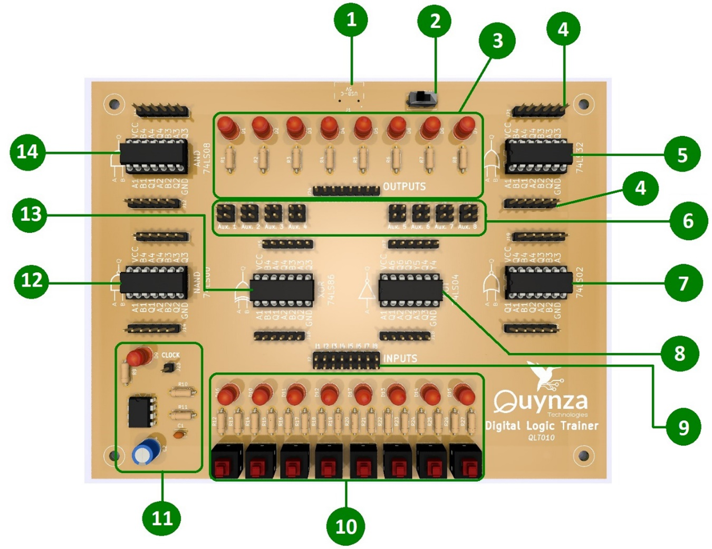

Objetivo. Aprender a reconocer los diferentes componentes del equipo. A continuación se observa y explica la distribución de los componentes del entrenador, para que el estudiante se habitué y reconozca dichos componentes.
Procedimiento.
- Entrada de alimentación del entrenador por cable tipo C3.
- Interruptor principal. Una vez esté en ON el LED del reloj se prende periódicamente.
- Salida de los resultados de los ejercicios. Son 8 LEDs, que permiten visualizar las salidas lógicas de las señales. Se usa especialmente para comprobar los resultados de un ejercicio, LED prendido 1, LED apagado 0. Estas señales se alimentan por los bornes que aparecen en la parte inferior. Son bornes tipo hembra.
- Bornes de entrada y de salida de las compuertas, son de tipo macho. Para cada circuito integrado hay dos juegos de estos. Uno en la parte superior y otro en la parte inferior. El de la parte inferior corresponde a los pines 1 a 6 de cada integrado. El pin 7, que es Gnd tierra, ya está conectado. El de la parte superior corresponde a los pines 13 a 8 de cada integrado. El pin 14, que es Vcc de alimentación ya está conectado. De manera que no hay que cablear los pines 7 y 14, pues ya están conectados.
- Compuerta OR. Ver diagrama del circuito integrado 74LS32.
- Bornes auxiliares. Permite que una señal se distribuya hasta en tres salidas. Hay dos grupos de estos auxiliares, se pueden utilizar a voluntad.
- Compuerta NOR. Ver diagrama del circuito integrado 74LS02. Compuerta NOT. Ver diagrama del circuito integrado 74LS04.
- Salida de las señales que entran por los interruptores. Vienen dobles por lo que se puede sacar la misma señal dos veces.
- Juego de interruptores de salida de las señales, LEDs y pines. Al oprimir un interruptor se produce un 1, LED encendido; sin oprimir se produce un 0, LED apagado. Esta señal se puede sacar por el par de pines correspondiente. Con estas señales 0 o 1, que se generan por los interruptores, se alimentan las entradas de las compuertas lógicas.
-
Reloj. Es un circuito que provee una señal de reloj, con un periodo de aproximadamente 3 segundos, 3 segundos en 1, enciende el LED, 3
segundos en 0, LED apagado.

- Compuerta NAND. Ver diagrama del circuito integrado 74LS00.
- Compuerta XOR. Ver diagrama del circuito integrado 74LS86.
- Compuerta AND. Ver diagrama del circuito integrado 74LS08.
NOTA. Recordar que la alimentación y la tierra de los circuitos integrados ya vienen cableados en el circuito impreso de la tarjeta.
Actividades sugeridas.
- Sin conectar el equipo, revise detalladamente las partes que lo componen. Identifique los integrados, los bornes de alimentación de las señales, los LEDs de entrada y los LEDs de salida, el circuito del reloj y los pines auxiliares.
- Sin conectar el equipo, gane práctica para conectar y desconectar los cables. Son tipo hembra-hembra, tome varios cables, y conecte y desconecte varios bornes, hasta que pueda hacerlo sin ninguna dificultad.
- Conecte el equipo, alimente los LEDs de salida con señales provenientes de los interruptores. Haga el cableado, prenda y apague los LEDs de entrada y de salida
- Sin conectar el equipo, lleve una sola señal de entrada a un AUX, de ahí saque tres cables y con ellos alimente tres LEDs de salida diferentes. Conecte el equipo, vea como se prenden los 3 LEDs.